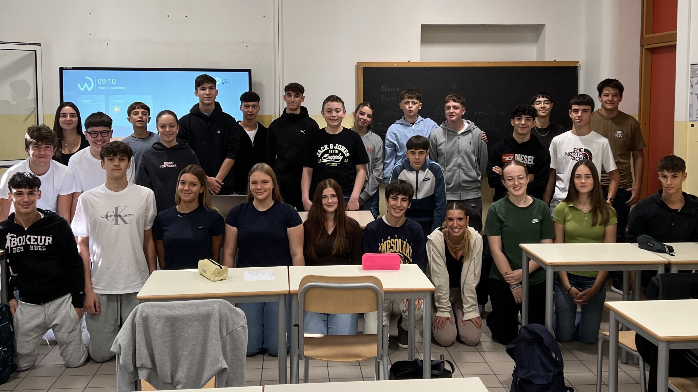

Questo sito nasce dal lavoro e dalla collaborazione degli studenti della nostra sezione, con l’obiettivo di raccogliere e presentare in modo chiaro e immediato i progetti realizzati nel corso dei cinque anni di studi da vari gruppi e collaborazioni della nostra classe.
Abbiamo sviluppato la piattaforma da zero, costruendo uno spazio che potesse mostrare al meglio ciò che abbiamo creato: siti web, modelli 3D, e-book e vari altri lavori che rappresentano la nostra esperienza, sia scolastica che tecnica.
L’idea è quella di offrire non solo un archivio completo, ma anche una panoramica del percorso che ci ha accompagnati in questi anni, per lasciarlo ai posteri a scopo di dimostrare come la scuola sia capace di animare i giovani a sfidare loro stessi per collegare interdisciplinarmente le materie accrescendo, o anche scoprendo, parallelamente le competenze che li appassionano.
Per noi questo sito è un modo per raccontare chi siamo e come siamo arrivati fin qui, un punto d'arrivo che allo stesso tempo apre la strada ai progetti futuri.
Classe 2AA,
Liceo scientifico delle Scienze Applicate,“Duca degli Abruzzi” - Treviso
